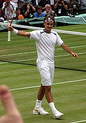
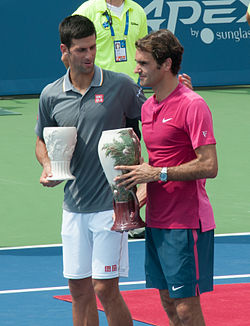

C'est en 1998 qu'il débute sa carrière professionnel en disputant son premier match en juillet lors du tournoi de Gstaad.
La saison 1999 marque ses début en Coupe Davis, il participe aussi à ses premiers tournois du Grand Chelem à Roland-Garros ou il perd dès son premier tour, et à Wimbledon ou il s'incline après un match intense en 5 sets. Mais il se ratrappe au mois d'octobre en remportant l'open de Brest tournoi ATP Challenger, il s'agit de sa première victoire en simple sur le circuit professionnel. Grace à ses bon résultat il intégre pour la première fois le top 100 mondial en occupant la 64ème place.
Au début de l'année 2001, Roger s'offre le titre de la Hopman Cup aux côtes de Martina Hingis. C'est aussi la première fois qu'il brille en Grand Chelem en atteignant les quarts de finale de Roland-Garros et de Wimbledon. Mais malheureusement il finira la saison comme la précédente par une défaite en finale du tournoi de Bâle.
2002 ne fut pas une bonne saison pour Roger qui s'incline au premier de tour de Roland-Garros et de Wimbledon. Quant à 2003 ou il gagne le tounoi londonien et devient le premier suisse à gagner un tounoi du Grand Chelem. Mais s'incline tout de même au premier à Roland-Garros. En gagnant la Masters Cup en fin de saison, il finit l'année à la 2ème place mondial.
Roger Federer à l'US Open en 2002
2004 marque le début du règne de Federer sur le tennis mondial. Grâce a ses victoire à l'Open d'Australie, Wimbledon et à l'US Open il devient donc le premier joueur a réaliser le petit Chelem. Grâce à ses excellents résultats il arrive à s'adjuger le première place qu'il arrivera à la conserver tout au long de l'année. Durant cette année il remporte 11 titres dont trois Masters Series et trois titres du Grand Chelem.
2005 le Suisse continue de dominer le monde du tennis en reussisant à s'imposer pour la 3ème fois consecutive a Wimbledon et à l'US Open. Malheureusement il perd face a David Nalbandian à la Master Cup qui met fin à une serie de 24 victoire consécutives en finale. Il remporte au total 11 titres dont quatre Master Series et deux Grand Chelem. Il reste une nouvelle fois numéro un mondial toute l'année.
2006 la meilleur saison de sa carrière comme en 2004 il réalise le petit Chelem. Il passe à une victoire du Grand Chelem calendaire en échounant en finale de Roland-Garros. Il obtient en tout 12 titres dont trois Grand Chelem, la Master Cup et 4 Masters Series. Une nouvelle victoire à la Master Cup ponctue une saison ou de nombreux records sont tombés, comme le total de gains en tournois sur une saison, le nombre de semaines consécutives à la première place mondiale, le nombre de points ATP, l'avance sur le second au classement, premier joueur à réaliser deux petits Chelems dans l'ère Open, premier joueur à remporter plus de dix tournois trois années consécutives.
2007 est assez similiare à 2006 en réalisant une nouvelle fois le petit Chelem en remportant l'Open d'Australie sans perdre un set du tournoi, l'US Open et Wimbledon qu'il a remporter pour la 5ème fois consécutives. Mais Sur les seize tournois auxquels il participe, le Suisse n'en remporte que huit c'est la première fois qu'il en gagne « aussi peu » depuis 2003. Comme en 2006 il termine son année sur une victoire à la Master Cup.
De 2008 à 2012 Roger Federer explose les records du tennis en gagnant 16 titre du Grand Chelem dont 7 fois Wimbledon, il obtient aussi le records de semaine à la place de n°1 en n'y restant 302 semaine. Il devient aussi vice-champion olympique et recorman de titre en Master.
Roger Federer à Wimbledon en 2005
En 2013, Roger Federer a connu une saison difficile marquée par une absence de titre majeur et une série de défaites inattendues. Il a remporté un seul titre à Halle et s'est qualifié pour les ATP World Tour Finals, mais a terminé la saison à la 6e place mondiale, son pire classement depuis 2002.
En 2014, Federer atteint les finales de tournois majeurs et réintègre le Top 2 grâce à l'influence offensive de son nouvel entraîneur Stefan Edberg. Il remporte deux victoires remarquables à l'Open d'Australie et mène la Suisse à la finale de la Coupe Davis pour la première fois depuis 2003. Cependant, il est éliminé dès les huitièmes de finale à Roland-Garros et ne remporte pas de titre du Grand Chelem pour la deuxième année consécutive. Federer remporte la Coupe Davis et la rencontre contre son compatriote Stanislas Wawrinka est élu le match de la saison ATP
En 2015, Federer remporte son 1er titre à Brisbane et atteint sa 1000e victoire sur le circuit ATP. Cependant, il est éliminé dès le 3e tour de l'Open d'Australie. À Roland-Garros, il perd en quart de finale, tandis qu'à Wimbledon, il s'incline en finale pour la deuxième année consécutive. À l'US Open, il atteint la finale mais est de nouveau vaincu par Djokovic. Au Masters, Federer bat Djokovic en phase de poule mais perd contre lui en finale. Il termine l'année à la 3e place mondiale avec 6 titres, mais aucune victoire dans les tournois majeurs.
En 2016, Federer a subi une opération du genou et une blessure au dos, ce qui l'a empêché de participer à tous les Grands Chelems pour la première fois depuis 2000. Il a terminé la saison à la 16e place mondiale, sa pire saison depuis 2001.
En 2017, après 6 mois hors des courts pour faire de la rééducation, Federer remporte l'Open d'Australie en battant Rafael Nadal en finale, son premier titre en Grand Chelem depuis 2012. Il remporte également Wimbledon, établissant un nouveau record de huit titres à ce tournoi, et remonte au top 3 mondial.
En 2018, Federer continue sur sa lancée de l’année précédente en remportant l’Open d’Australie pour la sixième fois, égalant ainsi le record co-détenu par Novak Djokovic et Roy Emerson. Il devient également le seul joueur de l’ère Open à remporter 4 titres du Grand Chelem après 30 ans. Après sa victoire à l’Open d’Australie, Federer devient le no 1 mondial le plus âgé de l’histoire à 36 ans et 6 mois
En 2019, Roger Federer perd son titre de l’Open d’Australie en huitième de finale contre Stefanos Tsitsipas, sortant du top 5 du classement ATP. Il remporte ensuite son 100e titre ATP en simple à Dubaï en février et atteint les demi-finales à Roland-Garros. À Wimbledon, il perd en finale.
En 2022 lors de l'Open d'Australie, Federer a affronté Tennys Sandgren en quarts de finale, un match lors duquel il a sauvé 7 balles de match avant de s'imposer. Cependant, il a été éliminé en demi-finale. En février, Federer s'est fait opérer du genou droit et a dû déclarer forfait pour plusieurs tournois, En juin, alors que le circuit ATP était arrêté en raison de la pandémie de Covid-19, Federer a annoncé qu'il ne jouerait plus en 2020 afin de guérir son genou et de revenir à son meilleur niveau.
Roger Federer avec le trophée après sa victoire à Cincinnati en 2015
Roger Federer a décidé de ne pas participer à l'Open d'Australie 2021 en raison de douleurs persistantes au genou. Il a fait son retour à la compétition en mars au tournoi de Doha, mais a été éliminé au deuxième tour. Federer a ensuite participé à l'Open de Genève et à Roland-Garros, mais a dû déclarer forfait pour les huitièmes de finale à Roland-Garros et pour les Jeux olympiques en raison de nouvelles blessures au genou. Il a finalement subi une nouvelle opération au genou droit et sera absent du circuit pendant plusieurs mois.
En 2022, Roger Federer retarde son retour à la compétition en raison de problèmes persistants au genou, ce qui laisse présager sa retraite prochaine selon certains observateurs. Il perd également son record de victoires en Grand Chelem au profit de Rafael Nadal, et perd des points qui le font sortir du top 40 pour la première fois depuis 2019. Après Wimbledon, il quitte totalement le classement ATP. Le 15 septembre, Federer annonce sa retraite après la Laver Cup, et son dernier match, un double avec Rafael Nadal, se fini par une défaite. Une cérémonie est organisée pour honorer sa carrière exceptionnelle.